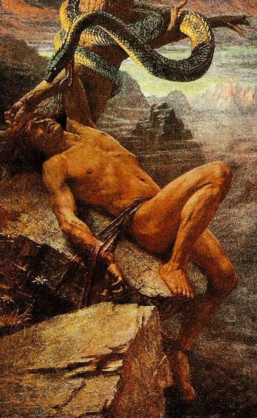

Основная группа богов во главе с Одином, которые любили, сражались и умирали, поскольку, подобно людям, не обладали бессмертием. Эти боги противопоставляются ванам (богам плодородия), великанам (етунам), карликам (цвергам), а также женским божествам – дисам, норнам и валькириям.
Асы, скандинавские боги: Один со своими сыновьями Тором и Локи, художник Говард Дэвид Джонсон
Бальдр
В скандинавской мифологии юный бог из асов, любимый сын Одина и Фригг, богини земли и воздуха. Прекрасного Бальдра называли мудрым и смелым, а его любящая и нежная душа излучала свет.
Бальдр.
Говард Дэвид Джонсон
Браги
Бог-скальд, бог поэзии и красноречия, сын Одина и великанши Гуннхольд, муж Идунн, хранительницы молодильных яблок.
Браги и Идунн.
Художник Бломмер, 1845 год
Ваны
Группа богов плодородия. Жили они в Ванахейме, далеко от Асгарда, обители богов-асов. Ваны обладали даром предвидения, пророчества, а также владели искусством колдовства. Им приписывались кровосмесительные связи между братьями и сестрами. К ванам относили Ньерда и его потомство – Фрейра и Фрейю.
Фрейя
Богиня любви
Велунд
Бог-кузнец, сын морехода и морской нимфы, властитель альвов, возлюбленный одной из валькирий. Он прославился как мастер по кольчугам и мечам. Он был талантливым мастером и выковал исландский лабиринт.
Велунд Бог-кузнец.
Макс Кох, 1904 год
Локи
Зловредный бог – плут из асов, любитель менять обличье. Он начинал с шалостей и проказ, но со временем стал истинным воплощением зла и ускорил Рагнарёк, гибель богов и всего мира.
Локи и змей. Джеймс Пенроуз, 1870
Ньерд
Бог моря. Он усмирял бури, поднятые буйным Эгиром. Мягкий и добродушный, Ньёрд любил свои залитые солнцем фьорды, прибежище священных чаек и лебедей. Глубоко почитаемый моряками и рыбаками, он помогал попавшим в беду кораблям, посылал попутные ветры и вызывал летние дожди.
Ньёрд Бог моря
Один
Верховный бог скандинавской мифологии, сын Бора и Бестлы, внук Бури. Его культ был особенно популярен у викингов. Пираты Севера поклонялись 6oгy, любящему битвы, и верили, что в Вальхалле этот одноглазый бог собирает рать эйнхериев, "доблестно павших" воинов.
Один.
Говард Дэвид Джонсон
Тор
В германо-скандинавской мифологии бог грома, бурь и плодородия. Он был одним из сыновей верховного бога Одина и богини земли Ёрд или Фьёргюн. Боевой молот Тора, Мьёлльнир, служил богам защитой от великанов и обладал волшебными свойствами: влиял на плодородие и смерть, мог возвращать к жизни, крепил браки.
Тор Бог грома
Тюр
В германо-скандинавской мифологии "бог битвы", сын Одина и его жены Фригг. Его культ был тесно связан с культом Одина, и им обоим приносили в жертву повешенных. Первоначально Тюр был богом неба, его полномочия позднее перешли к Одину и Тору. В римской мифологии раннему образу Тюра соответствует Марс.
Тюр и волк Фенрир
Фрейр
Бог плодородия, обеспечивавший солнечный свет, дождь, обильные урожаи и мир, сын бога моря и ветра Ньёрда и брат-близнец богини любви и красоты Фрейи.
Фрейр и Гуллинбурсти.
Говард Дэвид Джонсон
Хеймдалль
В скандинавской мифологии сын Одина и девяти матерей, страж богов, обитающий у края мира. Его обязанностью была охрана радужного моста Биврёст, соединявшего Асгард с Мидгардом (небо с землей), от великанов-ётунов.
Хеймдалль-владелец золотого рога.
Говард Дэвид Джонсон
Хермод
В скандинавской мифологии сын Одина и брат Бальдра, который исполнял обязанности вестника и посланника богов. В греческой мифологии ему в некоторой степени соответствует вестник богов Гермес.